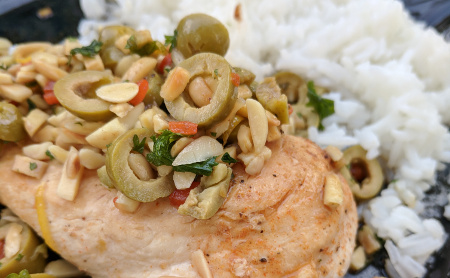

| Zutaten für 4 Personen: | |
| 50g | Mandelstifte |
| 1 | rote Peperoncini |
| 0.5 | Zitrone, Schale von |
| 100g | grüne, gefüllte Oliven |
| Bratbutter oder Bratreme | |
| 2 El | glattblättrige Petersilie |
| 4 | Pouletbrüstchen, ca 500g |
| 1 Tl | Salz |
| 0.5 Tl | Paprika |
| Pfeffer aus der Mühle | |
| 1 dl | Weisswein oder |
| 1.5 dl | Hühnerbouillon |
Zubereiten: 30 Minuten
Peperoncini in Ringe schneiden. Zitronenschale dünn abschälen und in feine Streifen schneiden. Oliven in Ringe schneiden.
Garnitur: Mandelstifte in der Bratpfanne unter häufigem Rühren hellbraun rösten, herausnehmen.
Peperoncini, Zitronenschale und Oliven in der Bratbutter anbraten. Mandeln und Petersile daruntermischen. Warm stellen.
Poulet: Pouletbrüstchen würzen, in derselben Pfanne in der heissen Bratbutter 12 bis 15 Minuten braten, herausnehmen, warm stellen.
Sauce: Bratsatz mit Weisswein und/oder Bouillon ablöschen, kurz einkochen, würzen. Poulet in die Sauce geben, kurz erhitzen, auf vorgewärmte Teller geben. Garnitur darüber verteilen.
Dazu passen gekochte Tiefkühlerbsen und Reis oder Kartoffelgratin.
Blick am Abend
Gelang ganz ausgezeichnet! RE, 16.7.2018
@LINKBACK_TAG@ @WAKELOCK@